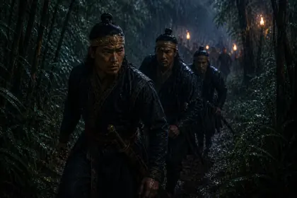
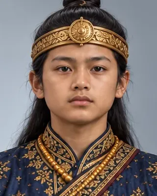
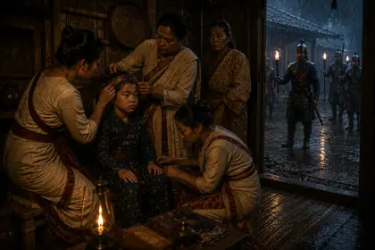
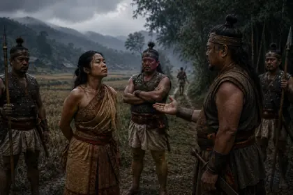
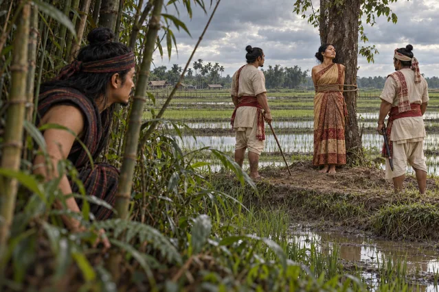

1679–1680
সুলিকফা (লোৰা ৰজা)
1679–1681 · Twenty-eighth Ahom king

A boy king under Laluk Sola Borphukan; deposed and killed. A rule that claimants must be physically unblemished was introduced in his reign.
Record confidence: medium.

1679–1680

1679

1679–1680

1680

1680

1680